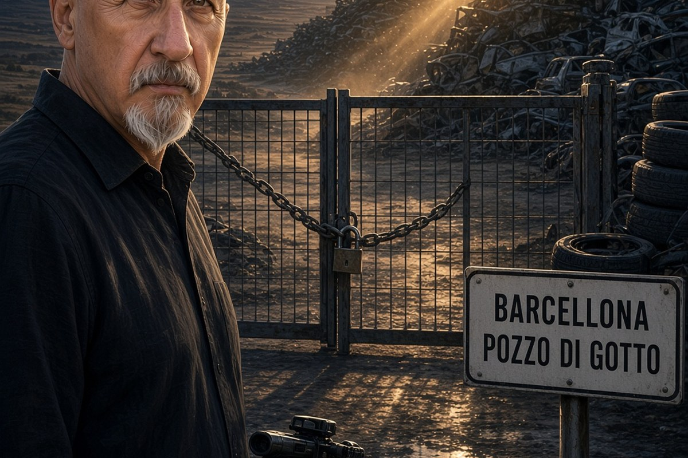

Franco Zanghì
Cronaca · 16 ottobre 2026
La confisca che non era stata annullata: il chiarimento sul caso Bellinvia

Due giorni dopo il racconto della ditta confiscata agli Ofrìa a Barcellona Pozzo di Gotto, una sentenza della Cassazione rimasta fuori dalle cronache rimette in fila le date e corregge un passaggio inesatto di quella ricostruzione.
di Franco Zanghì
Il 12 ottobre 2026 ho raccontato la vicenda della ditta di autodemolizioni Bellinvia, a Barcellona Pozzo di Gotto: l'azienda confiscata agli Ofrìa che, secondo le motivazioni depositate dalla giudice di Messina Alessandra Di Fresco, sarebbe rimasta sotto il controllo della famiglia anche dopo i provvedimenti dello Stato. Quindici condanne in primo grado e un'assoluzione.
In quel pezzo ho detto una cosa inesatta, e la correggo qui. Avevo detto che la Corte di cassazione aveva annullato la confisca dell'azienda. Non è così, e la differenza non è una sfumatura: la Cassazione aveva annullato un'ordinanza del giudice dell'esecuzione, quella che respingeva l'opposizione dei familiari, perché mal motivata. La confisca non è mai venuta meno.
A segnalarmelo è stato l'avvocato Ugo Colonna, un legale che su questa vicenda ha presentato esposti negli anni. Non ha chiesto di togliere nulla e non ha contestato il pezzo: ha detto che era il caso di chiarire, e si è offerto di mandarmi la sentenza. L'ha mandata.
La sentenza che nessuna cronaca aveva raccontato
Corte di cassazione, quinta sezione penale, 17 aprile 2026, presidente Paola Borrelli, relatrice Rosaria Giordano. Carmela Bellinvia e Luisella Alesci, madre e moglie di Salvatore Ofrìa, chiedevano di riavere l'azienda sostenendo di esserne terze estranee. La Corte ha respinto i ricorsi e le ha condannate alle spese. Un dettaglio che vale la pena riportare: la procura generale aveva chiesto di accogliere il ricorso, e la Corte ha deciso il contrario.
Le date, questa volta esatte: sequestro nel giugno 2011, con l'azienda affidata a un amministratore giudiziario nominato dal tribunale; confisca definitiva nel gennaio 2016; Salvatore Ofrìa condannato in via definitiva per partecipazione all'associazione mafiosa dei barcellonesi, con il periodo accertato dal 1995 al giugno 2011. Da aprile 2026 l'ultima strada per riprendersi l'impresa è chiusa.
Con i dati giusti la storia è più pesante, non più leggera. Non c'è una confisca rimessa in discussione. C'è un bene che per quindici anni è stato dello Stato sulla carta e che, secondo la sentenza di primo grado, dello Stato non lo è mai stato nei fatti.
Due date e nessun commento
Colonna ha inviato anche un secondo documento: una lettera che nel dicembre 2021 ha trasmesso alla procura di Messina per segnalare che l'azienda confiscata continuava a essere gestita dalla famiglia a cui era stata tolta. L'operazione di polizia con quindici arresti è del gennaio 2025. Sono due date, e mi fermo qui: che cosa stesse facendo la procura in quegli anni non lo può dire nessuno da fuori.
Il problema non è confiscare
Questo caso non è un'eccezione. La Fondazione Eurispes, in un rapporto presentato al Senato nel luglio 2026, conta oltre 47.000 beni confiscati alle mafie in Italia, e poco più della metà ha completato il percorso che dovrebbe restituirli alla collettività. Sulle imprese, secondo quel rapporto, circa il 95 per cento finisce avviato alla liquidazione; altre rilevazioni, più prudenti, parlano di otto o nove su dieci. Quando lo Stato prende un'azienda alla mafia, quasi sempre quell'azienda muore. La Bellinvia ha continuato a lavorare e a crescere.
E in qualche caso è andata peggio. A Palermo la sezione del tribunale che decideva su sequestri e confische è finita sotto processo per il modo in cui quei beni venivano amministrati e per come venivano scelti gli amministratori giudiziari. L'ex presidente di quella sezione, Silvana Saguto, è stata condannata, e nel luglio 2025 la corte d'appello di Caltanissetta, in un nuovo giudizio disposto dalla Cassazione, ha rideterminato la pena in sette anni e undici mesi. Non risulta un esito successivo.
Quello che non è definitivo
Le quindici condanne di Barcellona restano di primo grado e non sono definitive. L'amministratore giudiziario di quegli anni è imputato in un procedimento separato e in quella sentenza non è stato condannato. Per tutti vale la presunzione d'innocenza fino alla sentenza definitiva. Salvatore Ofrìa ha chiesto la revisione della condanna su cui la confisca si fonda: come sia finita quella richiesta, allo stato, non risulta.
Resta il punto su cui ho un'opinione. Confiscare è il passo semplice: c'è un decreto e c'è una firma. Tenere è il passo che nessuno presidia, e i numeri lo dicono. O lo Stato impara a far vivere le imprese che toglie alla mafia, e a controllare chi le amministra, oppure toglierle serve soltanto a cambiare l'intestazione di un fascicolo.
Fonti
- Corte di cassazione, quinta sezione penale, sentenza del 17 aprile 2026 sui ricorsi di Carmela Bellinvia e Luisella Alesci, documento trasmesso all'autore dall'avvocato Ugo Colonna
- Lettera dell'avvocato Ugo Colonna alla Direzione distrettuale antimafia di Messina, 20 dicembre 2021, documento trasmesso all'autore
- Gazzetta del Sud, «L'impresa mafiosa degli Ofria a Barcellona: decise pesanti condanne», 3 aprile 2026
- MessinaToday, «La mafia a Barcellona, il potere oltre la confisca: così la famiglia Ofria avrebbe continuato a controllare la Bellinvia»
- Gazzetta del Sud, «Barcellona, l'inchiesta sulla ditta confiscata gestita dalla mafia: la Cassazione rigetta quasi tutti i ricorsi», 4 luglio 2025
- TempoStretto, «Gestione mafiosa dell'impresa confiscata, sentenza per gli Ofria di Barcellona»
- Fondazione Eurispes, rapporto sui beni confiscati alle mafie presentato al Senato, luglio 2026
- Ricostruzione dell'autore basata su fonti dirette non pubbliche: atti trasmessi all'autore dal legale che ha segnalato la vicenda.
Le quindici condanne del processo di Barcellona Pozzo di Gotto sono di primo grado e non sono definitive. Alla data di pubblicazione non risulta l'esito della richiesta di revisione presentata da Salvatore Ofrìa né un esito successivo al giudizio di Caltanissetta del luglio 2025 sul caso Saguto.